PPTAGENT: Generating and Evaluating Presentations Beyond Text-to-Slides
None
Abstract
この論文では、文書から自動的にプレゼンテーションを生成するタスクについて解説します。このタスクは、コンテンツの質、視覚的な魅力、そして構造的な一貫性の3つの要素を考慮する必要があるため、非常に難しいとされています。 既存の手法は主にコンテンツの質を向上させることに焦点が当てられており、視覚的な魅力や構造的な一貫性についてはあまり考慮されていません。そのため、これらの手法の実用性は限られています。そこで、この論文では、これらの制限に対処するために、PPTAGENTという新しいフレームワークを提案します。
PPTAGENTの概要
PPTAGENTは、人間のプレゼンテーション作成ワークフローに着想を得た2段階の編集ベースのアプローチを採用することで、プレゼンテーション生成を包括的に改善します。 PPTAGENTの処理の流れは以下の通りです。
参照プレゼンテーションの分析:
まず、参照となるプレゼンテーションを分析し、スライドレベルでの機能タイプとコンテンツスキーマを抽出します。
(機能タイプとは、例えば「オープニングスライド」、「箇条書きスライド」などのスライドの役割のことです。コンテンツスキーマとは、スライド内の要素（タイトル、本文、画像など）の構成や配置のパターンのことです。)
アウトラインの作成とスライドの生成:
次に、抽出された情報に基づいてアウトラインを作成し、選択された参照スライドに基づいて編集アクションを繰り返し生成することで、新しいスライドを作成します。
(編集アクションとは、例えば「テキストの置換」、「画像の追加」などのスライドの要素を修正する操作のことです。)
PPTEVALの導入
生成されたプレゼンテーションの品質を包括的に評価するために、この論文ではさらにPPTEVALという評価フレームワークを導入します。PPTEVALは、コンテンツ、デザイン、そして一貫性という3つの側面からプレゼンテーションを評価します。
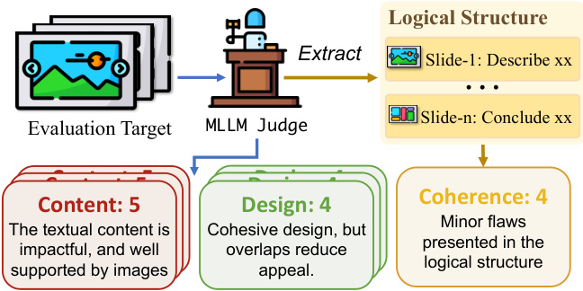図3: PPTEVALによるプレゼンテーションの評価軸
PPTEVALの評価軸
- コンテンツ：スライドに含まれる情報の質、テキストの明瞭さ、画像の適切さなどを評価します。
- デザイン：スライドの視覚的な魅力、配色、レイアウトなどを評価します。
- 一貫性：プレゼンテーション全体の論理的な流れ、ストーリーの整合性などを評価します。
実験結果
実験結果から、PPTAGENTが既存の自動プレゼンテーション生成手法を大幅に上回ることが示されました。PPTAGENTは、PPTEVALの3つの側面すべてにおいて、既存の手法よりも優れた性能を発揮しました。
注意点
Abstractでは具体的な数値データは省略されています。詳細な実験結果については、論文の本文を参照する必要があります。
コードとデータ
PPTAGENTのコードとデータは、以下のGitHubリポジトリで公開されています。 https://github.com/icip-cas/PPTAgent
1 Introduction
このセクションでは、論文の導入部分として、研究の背景、目的、および主要な貢献について概説します。具体的には、プレゼンテーション作成の自動化に対する関心の高まり、既存のアプローチの限界、そして本研究で提案するPPTAGENTとPPTEVALという新しいフレームワークについて説明します。
研究の背景と動機
プレゼンテーションは、情報を効果的に伝達するための重要な手段です。特に、聴衆を引き込み、コミュニケーションを円滑にするために、視覚的な要素が重視されます。しかし、質の高いプレゼンテーションを作成するには、魅力的なストーリー、洗練されたレイアウト、そして説得力のあるコンテンツが必要です。
従来のプレゼンテーション作成は、高度なスキルと多大な労力を要するため、自動化へのニーズが高まっています。近年では、大規模言語モデル（LLM）やマルチモーダル大規模言語モデル（MLLM）を活用して、プレゼンテーション生成プロセスを自動化する研究が活発に進められています。
既存のアプローチの限界
既存のプレゼンテーション生成アプローチは、主にテキストからスライドを生成する「text-to-slides」のパラダイムに従っています。これは、LLMの出力を、あらかじめ定義されたルールやテンプレートに基づいてスライドに変換するものです。
しかし、これらのアプローチは、プレゼンテーションを抽象的な要約タスクとして扱い、テキストコンテンツに重点を置く傾向があります。その結果、視覚的な要素が軽視され、聴衆を効果的に引き込むことができない、テキスト過多で単調なプレゼンテーションになりがちです。
PPTAGENTのアプローチ
本研究では、人間がプレゼンテーションを作成する際のワークフローに着想を得て、PPTAGENTという新しいアプローチを提案します。PPTAGENTは、スライド生成を2つの段階に分解します。まず、参考となるスライドを選択し、次にそのスライドを段階的に編集します。
この編集ベースのアプローチを実現するためには、いくつかの課題があります。まず、プレゼンテーションのレイアウトやモーダルの複雑さから、LLMがどのスライドを参考にすべきかを直接判断することは困難です。重要なのは、LLMが参考となるプレゼンテーションの構造とコンテンツパターンをより深く理解できるようにすることです。
また、プレゼンテーションは通常、PowerPointのXML形式で保存されます。この形式は冗長で複雑であるため、LLMが編集操作を確実に行うことは容易ではありません。
PPTAGENTの仕組み
PPTAGENTは、これらの課題に対処するために、2つのステージで動作します。
-
ステージI：プレゼンテーション分析
このステージでは、参考となるプレゼンテーションを詳細に分析し、スライドの機能的な種類とコンテンツスキーマを抽出します。これにより、その後の参照選択とスライド生成が容易になります。 -
ステージII：プレゼンテーション生成
このステージでは、編集API群を導入し、HTMLでレンダリングされた表現を使用して、コードインタラクションを通じてスライドの変更を簡素化します。さらに、自己修正メカニズムを実装し、LLMが中間結果と実行フィードバックに基づいて生成された編集アクションを反復的に改善できるようにします。
具体的には、まず参照スライドをカテゴリー（例：オープニングスライド、箇条書きスライド）に分類します。新しいスライドごとに、PPTAGENTは適切な参照スライドを選択し、一連の編集アクション（例：replace_span）を生成して、それを修正します。
PPTEVAL：包括的な評価フレームワーク
包括的な評価フレームワークがないため、本研究ではPPTEVALを提案します。PPTEVALは、MLLMを評価者として採用し、コンテンツ、デザイン、コヒーレンスの3つの側面からプレゼンテーションを評価します。
人間による評価によって、PPTEVALの信頼性と有効性が検証されています。結果は、PPTAGENTが高品質なプレゼンテーションを生成し、PPTEVALの3つの側面で平均3.67のスコアを達成することを示しています。
本研究の貢献
本研究の主な貢献は、以下の通りです。
- 📌 プレゼンテーションの自動生成を、参照プレゼンテーションに基づいた編集プロセスとして再定義するフレームワーク、PPTAGENTを提案します。
- 📝 コンテンツ、デザイン、コヒーレンスの3つの側面からプレゼンテーションを評価する包括的な評価フレームワーク、PPTEVALを導入します。
- 🔍 今後の研究を支援するために、PPTAGENTとPPTEVALのコードベース、および新しいプレゼンテーションデータセットZenodo10Kを公開します。
2 PPTAGENT
このセクションでは、論文のメインテーマであるPPTAGENTフレームワークについて解説します。PPTAGENTは、テキストからスライドを生成するタスクを、より洗練されたアプローチで解決するためのものです。具体的には、以下の2つのステージで構成されています。
-
Stage I: プレゼンテーション分析
参照となるプレゼンテーションを分析し、スライドのクラスタリングやスキーマ抽出を行います。これにより、どのような種類のスライドが、どのような構成要素を持っているかを理解します。 -
Stage II: プレゼンテーション生成
分析結果を活用して、入力ドキュメントに基づいて最適な参照スライドを選択し、反復的な編集プロセスを通じてターゲットのプレゼンテーションを生成します。
図2: PPTAGENTのワークフロー概要
2.1 Problem Formulation
このサブセクションでは、PPTAGENTが解決しようとしている問題について、より形式的に定義します。従来の方法とPPTAGENTのアプローチの違いを明確にすることで、PPTAGENTの革新性を際立たせます。
従来のプレゼンテーション生成手法では、各スライド\( \pmb{S} \)は、入力コンテンツ\( C \)から直接生成されます。このプロセスは、以下の式で表されます。
ここで、\( e_{i} \)はスライドの要素（テキストボックス、画像など）を表し、それぞれタイプ、コンテンツ、スタイル属性（ボーダー、サイズ、位置など）を持ちます。\( n \)はスライド要素の総数です。関数\( f \)は、入力コンテンツからスライドを生成するプロセスを表します。
- この従来の手法は、スライドをゼロから作成するため、すべてのスタイル属性を手動で指定する必要があります。
- 自動生成においては、スタイリングの自動指定は非常に難しい問題です。
PPTAGENTは、この課題を克服するために、参照スライドを編集して新しいスライドを生成するアプローチを採用します。これにより、参照スライドの洗練されたレイアウトやスタイルを維持できます。
PPTAGENTのアプローチは、以下の式で表されます。
ここで、\( C \)は入力コンテンツ、\( R_{j} \)は参照プレゼンテーションから選択された\( j \)番目の参照スライドです。\( A \)は、\( m \)個の実行可能なアクション（編集操作）のシーケンスを表し、各アクション\( a_{i} \)は実行可能なコードの1行に対応します。関数\( g \)は、入力コンテンツと参照スライドから編集アクションのシーケンスを生成するプロセスを表します。
- 既存のスライドを編集することで、ゼロからスライドを作成する手間を省きます。
- 参照スライドの優れたレイアウトやスタイルを再利用できます。
- LLMは、HTML形式でレンダリングされたスライドに対して、編集APIを通じて正確な変更を加えることができます。
2.2 Stage I : Presentation Analysis
Stage Iでは、参照プレゼンテーションを分析し、参照スライドの選択とスライド生成を円滑に進めるための情報を提供します。このステージは、以下の2つの主要なステップで構成されます。
-
スライドクラスタリング
スライドを構造的特徴とレイアウト特徴に基づいて分類します。 -
スキーマ抽出
各クラスタ内のスライドのコンテンツ構成を特定するために、コンテンツスキーマを抽出します。
これらのステップを通じて、参照プレゼンテーションのスライド要素に関する包括的な記述を得ることができます。
スライドクラスタリング
スライドは、その機能に基づいて大きく2つのタイプに分類できます。
-
構造スライド
プレゼンテーションの構成をサポートするスライド（例：オープニングスライド、トランジションスライド）。 -
コンテンツスライド
特定の情報を伝えるスライド（例：箇条書きスライド）。
これらのタイプを区別するために、LLMを使用してプレゼンテーションをセグメント化します。
-
構造スライド
LLMの長文脈処理能力を活用して、入力プレゼンテーション内のすべてのスライドを分析し、構造スライドを特定します。
テキストの特徴に基づいて構造的な役割をラベル付けし、それに応じてグループ化します。 -
コンテンツスライド
まず、コンテンツスライドを画像に変換し、階層的クラスタリングアプローチを適用して類似したスライド画像をグループ化します。
次に、MLLMを使用して変換されたスライド画像を分析し、各クラスタ内のレイアウトパターンを特定します。
- スライドクラスタリングのさらなる詳細については、付録Dを参照してください。
スキーマ抽出
クラスタリング後、スライド生成を容易にするために、コンテンツスキーマをさらに分析します。具体的には、各要素をカテゴリ、説明、コンテンツで表現する抽出フレームワークを定義します。
このフレームワークにより、各スライドを明確かつ構造的に表現できます。
-
カテゴリ
要素のタイプ（例：テキストボックス、画像）。 -
説明
要素の役割や機能（例：タイトル、本文）。 -
コンテンツ
要素の具体的な内容（例：テキスト、画像データ）。
以下はスキーマの例です。
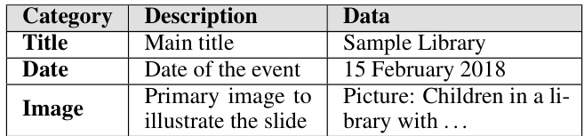スキーマの例
- スキーマ抽出の詳細な手順については、付録Fを参照してください。
2.3 Stage II : Presentation Generation
Stage IIでは、PPTAGENTはまず、新しいスライドごとに参照スライドと関連コンテンツを指定するアウトラインを生成します。次に、編集APIを通じて参照スライドの要素を反復的に編集し、ターゲットのプレゼンテーションを作成します。
アウトライン生成
図2に示すように、LLMを使用して、複数のエントリで構成される構造化されたアウトラインを生成します。各エントリは新しいスライドを表し、新しいスライドの参照スライドと関連ドキュメントコンテンツが含まれています。
-
参照スライド
Stage Iのスライドレベルの機能説明に基づいて選択されます。 -
関連ドキュメントコンテンツ
入力ドキュメントに基づいて識別されます。
スライド生成
構造化されたアウトラインに基づいて、スライドは対応するエントリに基づいて反復的に生成されます。各スライドについて、LLMは入力ドキュメントからテキストコンテンツと抽出された画像キャプションを組み込みます。新しいスライドは、コンテンツと構造の明確さの一貫性を確保しながら、参照スライドのレイアウトを採用します。
具体的には、アウトライン内の対応するエントリに基づいて新しいスライドを生成するために、LLMが参照スライドを編集できるようにする編集ベースのAPIを設計します。
これらのAPIは、スライド要素の編集、削除、複製をサポートしています。さらに、プレゼンテーションのXML形式の複雑さを考慮して、参照スライドをHTML表現にレンダリングし、より正確で直感的な形式を提供し、理解を容易にします。
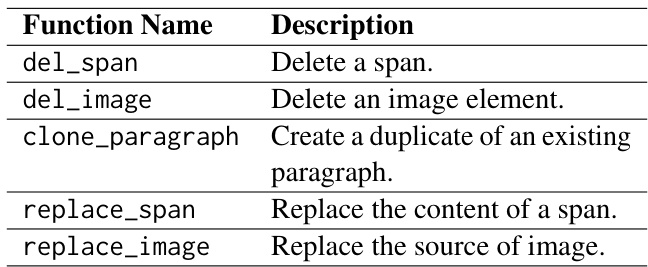編集ベースのAPI
このHTMLベースの形式と編集ベースのAPIを組み合わせることで、LLMは参照スライドに対して正確なコンテンツの変更を実行できます。
さらに、編集プロセス中のロバスト性を高めるために、自己修正メカニズムを実装します。具体的には、生成された編集アクションはREPL環境内で実行されます。アクションが参照スライドに適用できない場合、REPLは実行フィードバックを提供し、LLMがアクションを改良するのを支援します。
LLMは、このフィードバックを分析して編集アクションを調整し、有効なスライドが生成されるか、最大再試行回数に達するまで反復的な改良を可能にします。
3 PPTEVAL
このセクションでは、論文で提案されている包括的なプレゼンテーション評価フレームワーク PPTEVAL について解説します。従来のプレゼンテーション評価は、参照となるプレゼンテーションが必要でしたが、PPTEVAL は参照なしでプレゼンテーションの品質を多角的に評価できる点が革新的です。
PPTEVAL は、プレゼンテーションの品質を評価するために、数値スコア（1〜5段階評価）と、各評価項目に対する詳細な根拠を提供します。これにより、プレゼンテーションの具体的な改善点や強みを把握することが可能になります。
ポイント
PPTEVAL は、プレゼンテーションを客観的かつ詳細に評価するためのフレームワークであり、その評価は数値スコアだけでなく、具体的な根拠に基づいている点が重要です。
主要な評価次元
PPTEVAL は、確立されたプレゼンテーションデザインの原則に基づいて、以下の3つの主要な評価次元に焦点を当てています（表1 参照）。
- コンテンツ (Content): スライドに含まれる情報の質と適切さを評価します。
- デザイン (Design): スライドの視覚的な魅力と、コンテンツを効果的に伝えるためのデザイン要素を評価します。
- コヒーレンス (Coherence): プレゼンテーション全体の論理的な流れと一貫性を評価します。
図3 は、PPTEVAL がプレゼンテーションを評価する3つの次元（コンテンツ、デザイン、コヒーレンス）を示しています。各次元は独立して評価され、最終的なプレゼンテーションの品質を総合的に判断するために用いられます。
図の見方
図3はPPTEVALの中核となる考え方を示しており、プレゼンテーションの評価を多角的に行う重要性を強調しています。
評価プロセス
PPTEVAL の完全な評価プロセスは 図3 に示されており、具体的なスコアリング基準と代表的な例は Appendix B に記載されています。
この評価プロセスでは、生成されたプレゼンテーションに対して、スライドレベルでコンテンツとデザインを評価し、プレゼンテーション全体を通してコヒーレンスを評価します。これにより、プレゼンテーションの細部にわたる改善点を見つけることが可能になります。
Appendix B と 図3
詳細なスコアリング基準と評価プロセスについては、Appendix B と 図3 を参照してください。
表1 は、PPTEVAL における各次元のスコアリング基準を示しています。すべての評価は 1〜5 の段階で行われます。
注意点
各次元のスコアリング基準を理解することで、より客観的かつ一貫性のある評価が可能になります。
4 Experiment
このセクションでは、提案手法であるPPTAGENTの有効性を検証するために行われた実験について解説します。実験で使用したデータセット、実装の詳細、比較対象となるベースライン手法、評価指標、そして実験結果について詳細に説明します。このセクションを読むことで、PPTAGENTが既存手法と比較して優れている点を理解し、その根拠となる実験データを確認することができます。
4.1 Dataset
既存のプレゼンテーションデータセットには、主に2つの問題点があります。 ✏️ 1つ目は、PDFやJSON形式で保存されていることが多く、構造的な関係やスタイリング属性などのセマンティック情報が失われてしまうことです。 ✏️ 2つ目は、データセットの多様性が限られていることです。既存のデータセットは、主に人工知能分野の学術的なプレゼンテーションで構成されています。
これらの問題を解決するために、本研究ではZenodo10Kという新しいデータセットを導入します。Zenodoは、多様な分野の成果物をホストしており、明確なライセンスに基づいて利用できます。このデータセットから、10,448件のプレゼンテーションを収集し、公開しました。これにより、プレゼンテーション生成に関するさらなる研究を支援します。
実験では、Mondalらの研究と同様に、5つの分野からそれぞれ50件のプレゼンテーションをサンプルとして抽出し、参照プレゼンテーションとして使用します。さらに、同じ分野から50件のドキュメントを収集し、入力ドキュメントとして使用します。サンプリングの基準と前処理の詳細については、付録Aに記載されています。データセットの統計情報は、以下の表2にまとめられています。
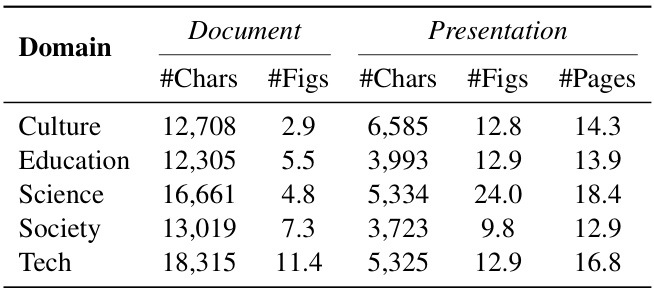表2: 実験で使用したデータセットの統計
表2は、実験で使用したデータセットの統計を示しています。
- #Chars: 文字数
- #Figs: 図の数
- #Pages: ページ数
4.2 Implementation Details
PPTAGENTは、以下の3つのモデルを使用して実装されています。
- GPT-4o-2024-08-06 (GPT-4o)
- Qwen2.5-72B-Instruct (Qwen2.5, Yang et al., 2024)
- Qwen2-VL-72B-Instruct (Qwen2-VL, Wang et al., 2024a)
これらのモデルは、テキストまたはビジュアルのどちらを扱うかによって分類されます。言語モデル（LM）とビジョンモデル（VM）の組み合わせを、例えば \( \mathrm{Qwen}2.5_{\scriptscriptstyle\mathrm{LM}}+\mathrm{Qwen}2-\mathrm{VL}_{\mathsf{V M}} \) のように定義します。
実験データは5つの分野をカバーしており、各分野には10個の入力ドキュメントと10個の参照プレゼンテーションがあります。したがって、各設定につき、500個のプレゼンテーション生成タスクが行われます（5分野 × 10入力ドキュメント × 10参照プレゼンテーション）。各スライド生成では、最大2回の自己修正反復が許可されます。テキストと画像の埋め込みを計算するために、それぞれChen et al. (2024b)とWu et al. (2020)を使用します。
すべてのオープンソースLLMは、NVIDIA A100 GPU上でVLLMフレームワーク（Kwon et al., 2023）を使用してデプロイされます。実験に必要な総計算コストは約500 GPU時間です。
4.3 Baselines
以下のベースライン手法を選択しました。
- DocPres (Bandyopadhyay et al., 2024): 複数段階を経てナラティブなスライドを生成し、類似性に基づくメカニズムを通じて画像を取り込むルールベースのアプローチを提案しています。
- KCTV (Cachola et al., 2024): 事前定義されたテンプレートを使用して、スライドを中間形式で作成し、最終的なプレゼンテーションに変換するテンプレートベースの手法を提案しています。
これらのベースライン手法は、視覚情報を処理しないため、ビジョンモデルなしで動作します。各設定では、参照プレゼンテーションを必要としないため、50個のプレゼンテーション（5分野 × 10入力ドキュメント）を生成します。したがって、FIDメトリックは評価から除外されます。
4.4 Evaluation Metrics
プレゼンテーション生成の評価には、以下の指標を使用します。
- Success Rate (SR): プレゼンテーション生成のロバスト性を評価します (Wu et al., 2024)。タスクが正常に完了した割合として計算されます。PPTAGENTの場合、自己修正後にエラーなくすべてのスライドが生成される必要があります。KCTVの場合、生成されたLaTeXファイルのコンパイルが成功するかどうかで判断されます。DocPresは、決定的なルールベースの変換であるため、この評価から除外されます。
- Perplexity (PPL): モデルが与えられたシーケンスを生成する尤度を測定します。Llama-3-8B (Dubey et al., 2024)を使用して、プレゼンテーションのすべてのスライドにわたる平均perplexityを計算します。Perplexityスコアが低いほど、テキストの流暢さが高いことを示します (Bandyopadhyay et al., 2024)。
- Rouge-L (Lin, 2004): 生成されたテキストと参照テキストの最長共通サブシーケンスを測定することにより、テキストの類似性を評価します。精度と再現率のバランスを取るために、F1スコアを報告します。
- FID (Fréchet Inception Distance) (Heusel et al., 2017): 生成されたプレゼンテーションと参照プレゼンテーションの類似性を特徴空間で測定します。サンプルサイズが限られているため、64次元の出力ベクトルを使用してFIDを計算します。
- PPTEVAL: GPT-4oを判断モデルとして使用し、コンテンツ、デザイン、コヒーレンスの3つの側面からプレゼンテーションの品質を評価します。コンテンツとデザインのスコアはスライド全体で平均化して計算し、コヒーレンスはプレゼンテーションレベルで評価します。
4.5 Overall Result
以下の表3は、PPTAGENTとベースライン手法の性能比較を示しています。
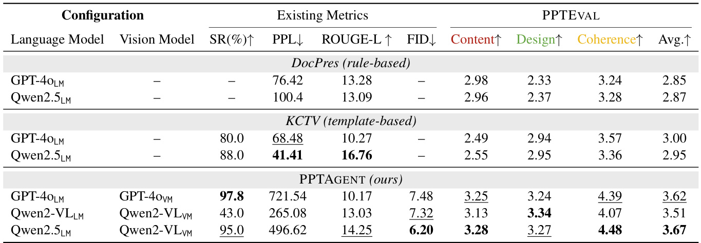表3: プレゼンテーション生成手法の性能比較
表3から以下のことがわかります。
- PPTAGENTは、全体的なプレゼンテーションの品質を大幅に向上させます。 PPTEVALの3つの側面すべてにおいて、ベースライン手法よりも統計的に有意な性能向上が見られました。
- ルールベースのベースライン（DocPres）と比較して、PPTAGENTはデザインとコンテンツの両方の側面で大幅な改善を示しています。DocPresによって生成されたプレゼンテーションは、デザインの努力が最小限であるためです。
- テンプレートベースのベースライン（KCTV）と比較して、PPTAGENTはデザインとコンテンツの両方で顕著な改善を達成しています。これは、編集ベースのパラダイムの有効性を強調しています。
- 特に、PPTAGENTはコヒーレンスの側面で大幅な強化を示しています。この改善は、PPTAGENTがスライドの構造的な役割を包括的に分析することに起因すると考えられます。

表4: PPTAGENTのアブレーション分析
表4は、各コンポーネントの貢献度を示す、\(\mathrm{Qwen}2.5_{\scriptscriptstyle\mathrm{LM}}+\mathrm{Qwen}2-\mathrm{VL}_{\scriptscriptstyle\mathrm{VM}}\)構成を利用したPPTAGENTのアブレーション分析を示しています。
PPTAGENTは、ロバストな生成性能を示します。本手法は、LLMが優れた成功率で優れたプレゼンテーションを作成することを可能にし、 \(\mathrm{Qwen}2.5\scriptscriptstyle{\mathrm{LM}}+\mathrm{Qwen}2-\mathrm{VL}_{\mathrm{VM}}\)とGPT- \(\mathrm{Qwen}2.5\scriptscriptstyle{\mathrm{LM}}+\mathrm{Qwen}2-\mathrm{VL}_{\mathrm{VM}}\)$40_{\mathsf{L M}}+\mathbf{GPT}-$40\upnu\upnu の両方で95％以上の成功率を達成しています。
PPTEVALは、優れた評価能力を示します。従来の指標（PPLやROUGE-Lなど）は、PPTEVALと比較して一貫性のない評価傾向を示します。例えば、KCTVは高いROUGE-L（16.76）を達成していますが、コンテンツスコアは低く（2.55）、本手法はROUGE-L（14.25）とコンテンツスコア（3.28）で逆の傾向を示しています。
ROUGEスコアは、ソースドキュメントとのテキストの整合性を重視しすぎており、プレゼンテーションの表現力を損なう可能性があります。最も重要なことは、PPTEVALが参照不要なデザイン評価とプレゼンテーションのコヒーレンスの包括的な評価という二重の能力を通じて、既存の指標を超えていることです。
5 Analysis
このセクションでは、PPTAGENTの性能を様々な角度から分析します。具体的には、以下の項目について詳細な調査を行います。
- アブレーション分析 (Ablation Study): PPTAGENTの各構成要素が全体の性能にどのように貢献しているかを検証します。
- 事例研究 (Case Study): PPTAGENTが生成したプレゼンテーションの具体例を分析し、その特性や強みを明らかにします。
- スコア分布 (Score Distribution): 生成されたプレゼンテーションのスコア分布を調査し、PPTAGENTの性能特性を明らかにします。
- 自己修正の有効性 (Effectiveness of Self-Correction): PPTAGENTに組み込まれた自己修正メカニズムが、生成プロセスの成功にどのように貢献しているかを評価します。
- 合意評価 (Agreement Evaluation): PPTEVALによる評価と人間の評価との一致度を検証し、PPTEVALの信頼性を評価します。
5.1 Ablation Study
アブレーションスタディとは、モデルの特定の要素を取り除いた場合に、性能がどのように変化するかを評価する実験手法です。この研究では、PPTAGENTの以下の4つの要素を取り除いた設定で実験を行いました。
- w/o Outline (アウトラインなし): 参照スライドをランダムに選択する設定です。通常、PPTAGENTはプレゼンテーションの構造を考慮して適切な参照スライドを選択しますが、この設定ではその機能が無効になります。
- w/o Structure (構造なし): アウトライン生成時に構造スライド（オープニングやトランジションのスライドなど、プレゼンテーションの構造を定義するスライド）を除外する設定です。PPTAGENTは通常、これらの構造スライドを考慮してプレゼンテーションの全体的な一貫性を維持しますが、この設定ではそれができなくなります。
- w/o CodeRender (コードレンダリングなし): スライドの表現を、Guo et al. (2023)によって提案された方法に置き換える設定です。PPTAGENTは通常、HTMLベースの表現を使用してスライドを操作しますが、この設定では別の表現方法が使用されます。
- w/o Schema (スキーマなし): コンテンツスキーマからのガイダンスを削除する設定です。PPTAGENTは通常、コンテンツスキーマを使用してスライドのコンテンツを整理しますが、この設定ではその情報が利用できません。
これらの実験は、Qwen2.5LM + Qwen2-VLVMの構成を使用して行われました。
Table 4の結果から、以下の2つの重要な知見が得られました。
- HTMLベースの表現の重要性: HTMLベースの表現（Code Renderコンポーネント）を削除すると、成功率が95.0%から74.6%に大幅に低下しました。このことは、HTMLベースの表現がインタラクションの複雑さを軽減し、よりロバストな生成を可能にすることを示唆しています。
- プレゼンテーション分析の重要性: アウトラインや構造スライドを削除すると、一貫性（Coherence）が4.48から3.36/3.45に大幅に低下しました。また、スライドスキーマを削除すると、成功率が95.0%から78.8%に低下しました。このことは、プレゼンテーションの構造とコンテンツを適切に分析することが、生成されるプレゼンテーションの品質にとって非常に重要であることを示しています。
アブレーションスタディの結果は、PPTAGENTの各コンポーネントが全体の性能に重要な役割を果たしていることを明確に示しています。特に、HTMLベースの表現とプレゼンテーション分析は、高品質なプレゼンテーションを生成するために不可欠であることがわかりました。
5.2 Case Study
ここでは、異なる設定で生成されたプレゼンテーションの代表的な例を紹介し、PPTAGENTの性能を具体的に示します。

Figure 4は、PPTAGENT、DocPres、KCTVによって生成されたプレゼンテーションのスコア分布を、PPTEVALの3つの評価次元（Content、Design、Coherence）に沿って比較したものです。この図から、PPTAGENTが他の手法と比較して、よりバランスの取れた、高得点のプレゼンテーションを生成できることがわかります。

Figure 5は、異なる手法でプレゼンテーションを生成した場合の比較分析を示しています。PPTAGENT (a) と PPTAGENT (b) は、異なる参照プレゼンテーションを使用して生成されたPPTAGENTの例です。この図から、PPTAGENTが多様な参照プレゼンテーションに基づいて、視覚的に魅力的なスライドを生成できることがわかります。
5.3 Score Distribution
生成されたプレゼンテーションのスコア分布をさらに詳細に調査し、各手法の性能特性を比較します。
Figure 4に示すように、ルールベースまたはテンプレートベースのパラダイムに制約されたベースライン手法は、コンテンツとデザインの両方の次元において多様性が限られており、スコアは主にレベル2と3に集中しています。これは、これらの手法が事前に定義されたルールやテンプレートに依存しているため、柔軟性に欠けるためです。
対照的に、PPTAGENTはより分散したスコア分布を示しており、大多数のプレゼンテーション（>80%）がこれらの次元で3以上のスコアを達成しています。これは、PPTAGENTがより柔軟な生成アプローチを採用しており、コンテンツとデザインの両方において多様な表現が可能であることを示唆しています。
さらに、PPTAGENTは構造スライドを包括的に考慮しているため、特に一貫性（Coherence）のスコアが著しく高く、プレゼンテーションの80%以上が4以上のスコアを獲得しています。このことは、PPTAGENTがプレゼンテーションの全体的な流れと構造を適切に考慮し、一貫性のあるストーリーを構築できることを示しています。
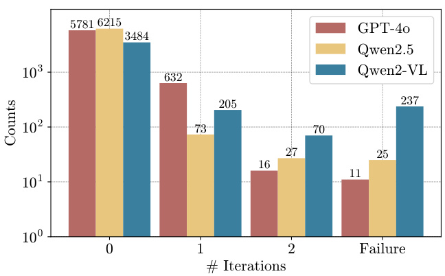Figure 5は、PPTAGENTが複数の次元にわたって優れたプレゼンテーション品質を示すことを示しています。まず、PPTAGENTは文脈的に適切な画像の配置で視覚要素を効果的に組み込みながら、簡潔で構造化されたスライドコンテンツを維持します。次に、多様な参照に基づいて視覚的に魅力的なスライドを生成する多様性を示しています。対照的に、ベースライン手法（DocPresおよびKCTV）は、ルールベースまたはテンプレートベースのパラダイムに制約されているため、視覚的なバリエーションが限られたテキストベースのスライドを主に生成します。
5.4 Effectiveness of Self-Correction
PPTAGENTには、生成されたスライドの品質を向上させるための自己修正メカニズムが組み込まれています。このセクションでは、その有効性について分析します。
Figure 6は、異なる言語モデルを使用して1つのスライドを生成するために必要な反復回数を示しています。この図から、GPT-4oはQwen2.5と比較して優れた自己修正能力を備えていることがわかります。これは、GPT-4oがより高度な推論能力と知識を持っているため、エラーをより効果的に特定し、修正できるためです。
ただし、Qwen2.5は最初の生成で発生するエラーが少ないこともわかります。これは、Qwen2.5が特定のタスクに対してより適切に調整されているか、またはGPT-4oよりも安定した生成プロセスを持っている可能性があるためです。
さらに、Qwen2-VLはエラーが発生する頻度が高く、自己修正能力が低いことが観察されました。これは、そのマルチモーダルポストトレーニング（Wang et al., 2024a）が原因である可能性があります。マルチモーダルモデルは、テキストと画像の両方を処理する必要がありますが、これにより、特定のタスクにおける性能が低下する可能性があります。
最終的に、3つのモデルすべてがエラーの半分以上を正常に修正しました。このことは、PPTAGENTの反復的な自己修正メカニズムが生成プロセスの成功を効果的に保証することを示しています。
5.5 Agreement Evaluation
PPTEVALの評価結果が、人間の評価とどの程度一致しているかを検証します。

Chen et al. (2024a)は、LLMがさまざまな生成タスクにおいて人間のような識別能力を持っていることを強調していますが、プレゼンテーションのコンテキストでは、LLMの評価と人間の評価との相関関係を評価することが重要です。
これは、Laskar et al. (2024)の研究によって、LLMが複雑なタスクの評価者として適切ではない可能性があることが示されているためです。
Table 5は、人間とLLMの評価間の相関関係を示しています。平均ピアソン相関は0.71であり、他の評価方法のスコア（Kwan et al., 2024）を上回っています。このことは、PPTEVALが人間の好みとよく一致していることを示しています。
Figure 7は、PPTEVALのコンテンツとデザインの次元と既存のメトリックとの間の相関ヒートマップを示しています。ピアソン相関係数から、既存のメトリックはプレゼンテーション評価には効果的ではないことがわかります。
具体的には、PPLは主にテキストの流暢さを測定しますが、スライドコンテンツの本質的な断片化のために、スライドコンテンツではパフォーマンスが低下し、外れ値測定が頻繁に発生します。同様に、ROUGELとFIDはそれぞれ参照テキストとプレゼンテーションへの類似性を定量化しますが、これらのメトリックはコンテンツとデザインの品質を適切に評価しません。これは、参照への高い適合性がプレゼンテーションの効果を保証するものではないためです。
これらの弱い相関関係は、コンテンツの品質とデザインの有効性の両方を考慮した、堅牢で包括的なプレゼンテーション評価のためのPPTEVALの必要性を強調しています。
6 Related Works
このセクションでは、本研究と関連する既存研究について概観し、本研究の位置付けを明確にすることを目的としています。 具体的には、自動プレゼンテーション生成、LLMエージェント、LLMを評価者として利用する研究の3つのカテゴリに分けて、それぞれの研究の概要と課題、および本研究との違いについて説明します。
Automated Presentation Generation (自動プレゼンテーション生成)
自動プレゼンテーション生成に関する既存研究は、スライド内の要素の配置やスタイリングの方法によって、以下の2つに分類できます。
- Rule-based methods (ルールベースの手法)
- Template-based methods (テンプレートベースの手法)
ポイント
これらの手法は、プレゼンテーションの自動生成において、要素の配置やスタイリングをどのように扱うかによって分類されます。
Rule-based methods
ルールベースの手法は、Mondal et al. (2024)やBandyopadhyay et al. (2024)
によって提案されているように、テキストコンテンツの強化に重点を置いています。
しかし、プレゼンテーションの視覚的な性質を軽視する傾向があり、結果として、エンゲージメントに欠ける出力となることがあります。
→ テキストの内容は良いが、見た目が単調になりやすい
Template-based methods
テンプレートベースの手法は、Cachola et al. (2024)やTongyiのような業界ソリューションを含み、
定義済みのテンプレートを使用して視覚的に魅力的なプレゼンテーションを作成します。
しかし、テンプレートのアノテーションに多大な手作業が必要となるため、スケーラビリティや柔軟性が制限されます。
→ 見た目は良いが、テンプレート作成に手間がかかり、応用が効きにくい
本研究（PPTAGENT）では、上記のような既存研究の課題を克服するために、参照プレゼンテーションを分析し、スライドレベルの機能タイプとコンテンツスキーマを抽出することで、 より柔軟でスケーラブルなプレゼンテーション生成を実現しています。
Table 5の解説
Table 5では、異なる評価軸（Coherence, Content, Design）における人間の評価とLLMの評価の相関スコアを示しています。 この表で示されている類似性のデータはすべて、p値が0.05未満であり、統計的に有意な信頼性があることを示しています。
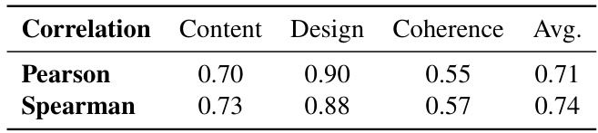ポイント
- Coherence (一貫性): プレゼンテーション全体の論理的な流れやストーリーの一貫性を評価
- Content (内容): スライドに含まれる情報の正確性、適切性、重要性を評価
- Design (デザイン): スライドの視覚的な魅力、レイアウト、色の使い方などを評価
Table 5は、LLMがプレゼンテーションの品質を評価する上で、人間と高い相関性を持つことを示唆しています。
LLM Agent (LLMエージェント)
LLMエージェントに関する研究は、LLMが人間を支援するエージェントとしての可能性を探求しています。 Deng et al. (2024)、Li et al. (2024)、Tang et al. (2025)などの多くの研究で、 LLMが様々なタスクで人間を支援できることが示されています。
具体例
- Wang et al. (2024b): LLMが実行可能なアクションを生成することでタスクを達成できることを示しました。
- Guo et al. (2023): LLMがAPI統合を通じてプレゼンテーション関連のタスクを自動化できる可能性を示しました。
本研究（PPTAGENT）では、LLMをエージェントとして活用し、プレゼンテーションの作成プロセスを自動化することで、人間の負担を軽減し、効率的なプレゼンテーション作成を支援します。
LLM as a Judge (LLMを評価者として)
LLMは、指示に従う能力や文脈を認識する能力に優れており、評価者として広く採用されています。 Liu et al. (2023)やZheng et al. (2023)などの研究で、LLMの評価者としての有効性が示されています。
研究例
- Chen et al. (2024a): MLLMを評価者として使用する可能性を示しました。
- Kwan et al. (2024): 多次元評価フレームワークを提案しました。
- Ge et al. (2025): LLMを単一スライドの品質評価に使用することを検討しましたが、プレゼンテーション全体の品質を総合的に評価していません。
本研究（PPTEVAL）では、LLMを評価者として活用し、プレゼンテーションの品質をContent, Design, Coherenceの3つの側面から包括的に評価するフレームワークを提案しています。 これにより、既存研究では評価されていなかったプレゼンテーション全体の品質を客観的に評価することが可能になります。
7 Conclusion
この論文の結論セクションでは、研究の成果と今後の展望についてまとめられています。ここでは、論文の主要な貢献であるPPTAGENTとPPTEVALについて改めて説明し、実験結果から得られた知見を強調しています。
このセクションのポイント:
- ✏️ PPTAGENTの提案: プレゼンテーション生成を、LLMを活用した二段階のプレゼンテーション編集タスクとして再定義。
- 📌 PPTEVALの導入: プレゼンテーションの質を定量的に評価するための新しい指標を提供。
- 📝 実験結果の強調: 提案手法が複数のドメインのデータで優れていることを実証。
- 🔍 今後の展望: この研究が、教師なし条件下でのスライド生成の新しいパラダイムを提供し、今後の研究に対する洞察を与えることを示唆。
PPTAGENTの再定義
PPTAGENTは、プレゼンテーション生成を、LLM（大規模言語モデル）がコードを理解し生成する能力を利用した二段階の編集タスクとして捉え直しました。具体的には、まずLLMが参照プレゼンテーションを分析し、スライドレベルでの機能タイプとコンテンツスキーマを抽出します。次に、この情報に基づいてアウトラインを作成し、選択された参照スライドを基に編集アクションを生成することで、新しいスライドを作成します。
LLM（Large Language Model）とは？
LLMは、大量のテキストデータで学習された深層学習モデルの一種です。自然言語処理（NLP）タスクにおいて高い性能を発揮し、文章生成、翻訳、質問応答などに利用されます。GPT-4oやQwen2.5などがその代表例です。
PPTAGENTの二段階アプローチ
-
1参照プレゼンテーションの分析: LLMが参照プレゼンテーションを分析し、スライドの機能タイプ（例：タイトルスライド、箇条書きスライド）とコンテンツスキーマ（例：タイトル、本文、画像）を抽出します。
-
2スライドの生成: 抽出された情報に基づいてアウトラインを作成し、参照スライドを基に編集アクションを生成することで、新しいスライドを作成します。
PPTEVALの提案
PPTEVALは、プレゼンテーションの質を定量的に評価するための新しい指標として提案されました。具体的には、コンテンツ、デザイン、コヒーレンスの3つの側面からプレゼンテーションを評価します。
PPTEVALの3つの評価側面
- コンテンツ: スライドの内容が適切で、情報が明確に伝わるか。
- デザイン: スライドのデザインが魅力的で、視覚的に訴えるか。
- コヒーレンス: プレゼンテーション全体を通して一貫性があり、論理的な流れがあるか。
実験結果の強調
複数のドメインのデータを用いた実験により、PPTAGENTとPPTEVALの有効性が実証されました。PPTAGENTは、既存の自動プレゼンテーション生成手法と比較して、コンテンツ、デザイン、コヒーレンスのすべての側面で優れた性能を発揮しました。
PPTAGENTの利点:
- 参照プレゼンテーションを基にスライドを生成することで、デザインの一貫性を確保。
- LLMの能力を活用することで、多様なコンテンツに対応可能。
- 編集タスクとして捉えることで、既存のスライドを再利用し、効率的な生成を実現。
PPTEVALの利点:
- コンテンツ、デザイン、コヒーレンスの3つの側面から、プレゼンテーションの質を総合的に評価可能。
- 定量的な指標を提供することで、客観的な評価を実現。
- 自動評価を可能にすることで、大規模なプレゼンテーションの評価を効率化。
今後の展望
この研究は、教師なし条件下でのスライド生成の新しいパラダイムを提供し、今後の研究に対する洞察を与えます。具体的には、PPTAGENTとPPTEVALを組み合わせることで、より高品質なプレゼンテーションを自動生成するための基盤が構築されました。今後は、より多様なデータセットでの検証や、LLMの能力をさらに活用した高度な編集機能の開発などが期待されます。
Limitations
Limitationsセクションでは、PPTAGENTのプレゼンテーション生成における限界について議論します。このセクションの主な目的は、PPTAGENTが持つ潜在的な弱点や改善の余地がある点を明確にすることです。 この情報を理解することで、今後の研究開発の方向性を示唆し、より実用的で信頼性の高いプレゼンテーション生成システムの構築に貢献します。
成功率の課題
PPTAGENTは、データセットにおいて高い成功率（95%超）を達成していますが、 必ずしも常にプレゼンテーションを生成できるわけではありません。
解説
PPTAGENTが高い成功率を誇る一方で、システムが完全に信頼できるとは限りません。 例えば、100回に数回はプレゼンテーションの生成に失敗する可能性があります。 この問題を解決するためには、モデルのロバスト性（頑健性）を高める必要があります。
ロバスト性とは、システムが予期せぬ入力や環境の変化に対して、 安定して動作し続ける能力のことです。
この成功率のばらつきは、実際の使用環境における信頼性を低下させる可能性があります。 信頼性とは、システムが期待どおりに動作する確率のことです。 PPTAGENTの信頼性を向上させるためには、以下の対策が考えられます。
- ✏️ モデルのアーキテクチャを改善する
- 📌 学習データを増やす
- 📝 自己修正メカニズムを強化する
これらの対策によって、PPTAGENTはより安定し、どのような状況でも高品質なプレゼンテーションを生成できるようになるでしょう。
参照プレゼンテーションへの依存
PPTAGENTは、高品質な参照プレゼンテーションを入力として利用できますが、 生成されるプレゼンテーションの品質は、参照プレゼンテーションの質に大きく影響されます。
解説
PPTAGENTは、参照プレゼンテーションを基にして新しいプレゼンテーションを生成します。 しかし、参照プレゼンテーションの品質が低い場合、生成されるプレゼンテーションもまた品質が低いものになる可能性があります。 この問題を解決するためには、以下の2つのアプローチが考えられます。
アプローチ1：参照プレゼンテーションの多様性を増やす
様々なスタイルの参照プレゼンテーションを用意することで、
PPTAGENTがより柔軟なプレゼンテーションを生成できるようになります。
例えば、学術的なプレゼンテーションだけでなく、
ビジネス向けのプレゼンテーションや教育用のプレゼンテーションなど、
様々な種類のプレゼンテーションを参照できるようにします。
アプローチ2：参照プレゼンテーションに依存しない生成方法を開発する
参照プレゼンテーションに頼らずに、
入力されたドキュメントの内容に基づいて直接プレゼンテーションを生成する手法を開発します。
例えば、テキストから直接スライドのデザインを生成するモデルや、
ユーザの指示に基づいてスライドを生成するインタフェースなどが考えられます。
参照プレゼンテーションへの依存を減らすことで、 PPTAGENTはより自律的に高品質なプレゼンテーションを生成できるようになるでしょう。
自律的とは、外部からの指示や制約に頼らずに、 自らの判断で行動できるという意味です。
視覚情報の活用不足
PPTAGENTは、レイアウトの最適化において既存の手法よりも改善を示していますが、 視覚情報を十分に活用してスライドのデザインを洗練させていません。
解説
PPTAGENTは、テキストや画像の配置をある程度最適化できますが、
視覚的な要素（色、フォント、アイコンなど）を効果的に利用して、
スライド全体のデザインを向上させる能力はまだ十分ではありません。
例えば、要素が重なって読みにくくなるなどのデザイン上の欠陥が見られることがあります。
課題：視覚情報の高度な活用
PPTAGENTがより洗練されたデザインを実現するためには、 以下の要素を考慮する必要があります。
- 📊 適切な配色を選択する
- ✏️ 視覚的に訴求力のあるフォントを使用する
- 📌 コンテンツを強調するためのアイコンや図形を効果的に配置する
- 📝 スライド全体のレイアウトを最適化し、要素の重なりを防ぐ
これらの視覚情報をより適切に活用することで、 PPTAGENTは視覚的に魅力的で、 理解しやすいプレゼンテーションを生成できるようになるでしょう。
今後の展望
今後の研究では、以下の点に焦点を当てる必要があります。
- ロバスト性の向上：プレゼンテーション生成の安定性を高める。
- 参照依存の軽減：参照プレゼンテーションへの依存を減らし、より自律的な生成を可能にする。
- 視覚情報の活用：視覚情報をより効果的に取り入れ、デザインの質を向上させる。
これらの課題を克服することで、 PPTAGENTはより実用的で、 高品質なプレゼンテーション生成システムへと進化するでしょう。
Ethical Considerations
このセクションでは、論文で使用したデータセット「Zenodo10K」の構築における倫理的な配慮について説明します。データ収集とアノテーション作業において、知的財産権の尊重、公正な労働慣行の遵守という2つの主要な倫理的側面に取り組んでいます。以下に詳細を解説します。
データ収集における倫理的配慮
まず、データセット Zenodo10K の構築におけるデータ収集の倫理的側面について解説します。データ収集にあたり、以下の点に留意しました。
公開APIの利用: Zenodo10Kの構築にあたり、公開されているAPIを利用してデータを収集しました。これにより、データの透明性と再現性を確保しています。
ライセンス条項の遵守: 各データアーティファクト（例えば、論文ファイルや画像ファイルなど）に付随するライセンス条項を厳格に遵守しました。具体的には、それぞれのライセンスで変更や商用利用が許可されていないアーティファクトは、データセットから除外しました。
つまり、データセットの作成においては、著作権や利用規約を無視してデータを集めるのではなく、正当な利用が認められている範囲内でデータを利用しているという事です。
知的財産権の尊重
知的財産権の尊重は、研究活動における基本的な倫理です。本研究では、データセットに含める各要素のライセンス条件を慎重に確認し、以下の点に注意して知的財産権を侵害しないように努めました。
注意点
ライセンスの種類によっては、非商用利用のみが許可されているものや、改変が禁止されているものがあります。これらの条件を遵守するために、データセットに含める要素を厳選しました。
ライセンス条項の確認
これにより、データセット Zenodo10K は、知的財産権を尊重し、法的に問題のない範囲で構築されています。
アノテーション作業における倫理的配慮
次に、データセット Zenodo10K の構築におけるアノテーション作業の倫理的側面について解説します。アノテーション作業は、データの品質を向上させるために重要な工程ですが、作業者の労働条件にも配慮する必要があります。本研究では、以下の点に留意しました。
公正な報酬: プロジェクトに関わるすべてのアノテーション担当者に対して、それぞれの都市における最低賃金を上回る報酬を支払いました。これにより、労働者の生活水準を尊重し、公正な労働条件を提供しています。
つまり、アノテーション作業は、データの質を高めるために重要な工程であると同時に、アノテーションを行う人々の労働条件も重視しているという事です。
公正な労働慣行の遵守
公正な労働慣行を遵守することは、研究活動における重要な倫理です。本研究では、アノテーション担当者の労働条件を以下のように管理し、公正な労働慣行を遵守しました。
実施事項
- アノテーション担当者の労働時間と休憩時間を適切に管理
- アノテーション作業に対する適切なトレーニングを提供
- アノテーション担当者からのフィードバックを収集し、作業環境の改善に努める
公正な労働慣行の遵守
これにより、データセット Zenodo10K の構築に関わるすべての人々の権利を尊重し、倫理的な問題がないように努めました。
まとめ
本研究では、データセット Zenodo10K の構築にあたり、データの収集からアノテーション作業に至るまで、倫理的な側面を十分に考慮しました。具体的には、知的財産権の尊重と公正な労働慣行の遵守という2つの主要な倫理的側面に取り組みました。
これらの倫理的配慮は、研究の信頼性を高め、社会的な責任を果たす上で不可欠です。今後も、研究活動における倫理的な側面を常に意識し、より良い研究成果を目指していきます。
A Data Preprocessing
このセクション「A Data Preprocessing（データ前処理）」では、論文で使用するデータセットを構築するために行われた具体的な前処理の手順を解説します。前処理は、データの品質を高め、モデルの学習効率を向上させるために非常に重要な工程です。ここでは、プレゼンテーションと文書の選択、テキストと画像の抽出、重複排除といった処理について詳しく見ていきましょう。
データセットの規模と範囲の限定
まず、データセットの規模を適切に保つために、以下の基準でプレゼンテーションと文書が選ばれました。
- プレゼンテーション: 12ページから64ページの範囲のもの
- ドキュメント: テキスト長が2,048文字から20,480文字の範囲のもの
これにより、計算コストを抑えつつ、十分な情報量を持つデータセットを構築することが目指されました。
ポイント
この範囲設定は、過度に長文または短文のコンテンツを排除し、モデルが学習しやすい適切なデータ量を提供するために重要です。
テキストとビジュアルコンテンツの抽出
選ばれたドキュメントから、テキストとビジュアル（画像）コンテンツを抽出するために、VikParuchuri (2023)によって開発されたツールが使用されました。
- テキスト: 抽出されたテキストは、その後、セクションごとに整理されました。
- ビジュアルコンテンツ: 画像の内容を説明するために、画像キャプションが生成されました。
画像キャプションの重要性
画像キャプションは、テキストベースで画像を選択する際に役立ちます。これにより、関連性の高い画像を効率的に選択できるようになります。
重複排除
データセット内の冗長性を減らすために、以下の2つのレベルで重複排除が行われました。
画像レベルの重複排除
画像埋め込み（image embeddings）のコサイン類似度スコアが0.85を超える画像を、重複画像として特定し、削除しました。
コサイン類似度：2つのベクトルの類似度を測る指標。1に近いほど類似している。
具体例
例えば、同じロゴ画像が複数のスライドに存在する場合、この処理によって1つに集約されます。
スライドレベルの重複排除
Fu et al. (2022)の研究で提案された方法に従い、テキスト埋め込み（text embeddings）のコサイン類似度スコアが直前のスライドと比較して0.8を超えるスライドを、重複スライドとして削除しました。
なぜ直前のスライドと比較するのか？
プレゼンテーションでは、前のスライドと内容が重複しているスライドは、聴衆にとって冗長である可能性が高いため、このような処理が行われます。
まとめ
このセクションでは、データセットの品質と効率性を高めるために、データの選択、抽出、および重複排除が行われたことが説明されています。これにより、モデルはより効果的に学習し、高品質なプレゼンテーションを生成できる基盤が整えられました。
注意点
ここで設定された閾値（0.85や0.8）は、データセットの特性やタスクの要件に応じて調整されることがあります。
B Details of PPTEVAL
このセクション（B Details of PPTEVAL）では、PPTAGENT論文における重要な要素であるPPTEVALの評価プロセスについて詳細に解説します。 PPTEVALは、自動生成されたプレゼンテーションの品質を客観的に評価するためのフレームワークであり、その評価の信頼性と妥当性を検証するために、実際に行った評価実験の手順、評価者間の合意度、および評価基準について具体的に説明します。 このセクションを読むことで、PPTEVALがどのように実施され、その結果がどのように解釈されるかを理解することができます。
評価実験の概要 📊
PPTAGENTの性能を評価するために、以下の実験を実施しました。
- 評価対象: 合計250個のプレゼンテーション
- Zenodo10Kからランダムに選ばれた50個の現実世界のプレゼンテーション
- ベースライン手法で生成された100個のプレゼンテーション
- PPTAGENTで生成された100個のプレゼンテーション
- 評価者: 上海のクラウドソーシングプラットフォームを通じて募集された4人の大学院生
- 評価方法: PPTEVALの評価フレームワークに従い、コンテンツ (Content)、デザイン (Design)、コヒーレンス (Coherence) の3つの側面から評価
- 評価手順:
- 評価者にスライドの画像を変換して提供
- 評価者それぞれが個別にスコアリング
- 結果を議論し、最終的なスコアについて合意
評価者間の合意度 🤝
評価の信頼性を確認するために、評価者間の合意度を測定しました。
- 指標: Fleiss' Kappa
- 平均スコア: 0.59
- コンテンツ (Content): 0.61
- デザイン (Design): 0.61
- コヒーレンス (Coherence): 0.54
- 解釈: 満足できる合意 (Kwan et al., 2024)
Fleiss' Kappaは、複数の評価者によるカテゴリカルデータの評価において、評価者間の合意度を測る指標です。 0.59という値は、評価者間である程度の合意が見られていることを示唆しています。
評価の側面と基準 🧐
PPTEVALでは、プレゼンテーションを以下の3つの側面から評価します。
-
コンテンツ (Content)
スライドに提示される情報の質を評価します。テキストと画像の双方に焦点を当て、以下の3つの視点から評価します。
- 情報量: 適切量の情報が提示されているか
- テキストの明瞭さと質: 明確でインパクトのあるテキストが、適切な量の情報を伝えているか
- 視覚コンテンツのサポート: 画像がテキストコンテンツを補完し、情報をより分かりやすく魅力的にしているか
テキストコンテンツの質が高いとは、明確でインパクトのあるテキストが適切な情報量を伝えている状態を指します。 画像はテキストコンテンツを補完し、情報をより理解しやすく、魅力的にする必要があります。 コンテンツの質を評価するために、スライド画像をMLLMに入力します。これは、スライドの内容をプレーンテキスト形式で理解することが困難であるためです。
-
デザイン (Design)
優れたデザインは、人目を引くだけでなく、コンテンツの伝達を強化します。デザインの側面は、以下の3つの視点から評価されます。
- 配色: スライドの配色が、コンテンツを強調しつつ調和を保っているか
- 視覚要素: 幾何学的な形状などの視覚要素が、スライドのデザインをより表現豊かにしているか
- 全体的なデザイン: 基本的なデザイン原則（要素の重複の回避、デザインがコンテンツの伝達を妨げないことなど）に準拠しているか
具体的には、スライドの配色には明確なコントラストがあり、コンテンツを際立たせながらも調和が取れている必要があります。 幾何学的な図形のような視覚要素の使用は、スライドデザインをより表現豊かにすることができます。 優れたデザインは、要素が重ならないようにしたり、デザインがコンテンツの伝達を妨げないようにするなど、基本的なデザイン原則に従う必要があります。
-
コヒーレンス (Coherence)
コヒーレンスは、プレゼンテーションにおいて聴衆の関心を維持するために不可欠です。コヒーレンスは、論理構造と提供される文脈情報に基づいて評価されます。
- 論理構造: プレゼンテーション全体の流れが論理的で、首尾一貫しているか
- 文脈情報: 聴衆がコンテンツを円滑に理解できるように、十分な文脈情報が提供されているか
効果的なコヒーレンスは、モデルが魅力的なストーリーラインを構築し、聴衆がコンテンツをシームレスに追うことができるように、文脈情報を豊かにすることで実現されます。 プレゼンテーションから抽出された論理構造と文脈情報を分析することによって、コヒーレンスを評価します。

図8は、PPTEVALの代表的なスコアリングの例を示しています。 各評価側面（コンテンツ、デザイン）について、スコアとその理由が示されています。 例えば、コンテンツの評価では、情報が不足しているスライドには低いスコアが、関連性の高い画像でサポートされているスライドには高いスコアが与えられています。
デザインの評価では、モノクロで視覚要素がないスライドには低いスコアが、調和の取れた色使いと幾何学的な図形を使用したスライドには高いスコアが与えられています。
C Detailed Performance of PPTAGENT
このセクションでは、PPTAGENTの性能を詳細に分析し、特にQwen2.5LM+Qwen2-VLVMというモデル構成における様々なドメインでの性能評価を示します。 また、成功率を考慮した性能評価についても触れ、失敗した生成結果が全体の性能に与える影響を考察します。
目的と論旨
このセクションの主な目的は、PPTAGENTの性能を多角的に評価し、その有効性と潜在能力を明らかにすることです。 特に、異なる言語モデルやビジョン言語モデルの組み合わせが、生成されるプレゼンテーションの質にどのように影響するかを詳細に分析します。 また、成功率が低い場合に全体の評価スコアがどのように低下するかを示し、PPTAGENTの改善に向けた重要な洞察を提供します。
Table 8: ドメイン別詳細性能分析
Table 8では、Qwen2.5LM+Qwen2-VLVMの組み合わせにおける、様々なドメインでの詳細な性能分析が示されています。 ここでは、成功率 (SR)、Perplexity (PPL)、FID (Fréchet Inception Distance)、そしてPPTEVALによる3つの評価軸（Content, Design, Coherence）の平均スコアがドメイン別に比較されています。
このテーブルを見ることで、PPTAGENTが特定のドメインにおいてより高い性能を発揮する傾向があるか、あるいは特定の評価指標において強みや弱みがあるかなどを把握することができます。 例えば、特定のドメインでは成功率が高い一方で、デザインのスコアが低いといった傾向が見られるかもしれません。
Table 7: 成功率で重み付けしたPPTEVALスコア
Table 7では、Qwen2.5LM+Qwen2-VLVMの構成において、PPTAGENTの各コンポーネントの貢献度を評価するために、成功率で重み付けしたPPTEVALスコアが使用されています。 この重み付けは、生成が失敗した場合にPPTEVALスコアを0とすることで、成功率が全体の性能に与える影響を明確に示すことを目的としています。
これは、単に平均スコアを比較するだけでなく、システム全体のロバスト性（頑健性）を考慮した評価方法と言えます。 成功率が低い場合、たとえ成功した生成結果の質が高くても、全体の評価としては低いスコアになることを示唆しています。
Table 6: GPT-4oとQwen2.5の性能比較
Table 6では、GPT-4oとQwen2.5という異なる言語モデルの性能が比較されています。 GPT-4oは様々な評価指標において一貫して優れた性能を示していますが、Qwen2-VLはマルチモーダルな事後学習によるトレードオフから、言語能力に限界があることが指摘されています。
しかし、Qwen2.5の導入によって、これらの言語的な弱点が軽減され、GPT-4oと同等の性能を達成し、最高の性能を示しています。 これは、オープンソースのLLMが、競争力のある、非常に有能なプレゼンテーションエージェントとして大きな可能性を秘めていることを示しています。
ポイント
- GPT-4o: 安定した高い性能
- Qwen2-VL: 言語能力に課題
- Qwen2.5: 言語能力が向上し、GPT-4oに匹敵する性能
まとめ
このセクションでは、PPTAGENTの性能を様々な角度から分析し、その有効性を示しました。 特に、Qwen2.5LM+Qwen2-VLVMというモデル構成におけるドメイン別の性能、成功率を考慮した評価、そしてGPT-4oとの比較を通じて、PPTAGENTの強みと弱みを明らかにしました。
これらの分析結果は、今後のPPTAGENTの改善に向けた重要な指針となるでしょう。
D Slide Clustering
このセクションでは、スライドのレイアウト分析のための階層型クラスタリングアルゴリズムについて説明します。このアルゴリズムは、Algorithm 1に示されており、スライドをクラスタにグループ化する際に、類似度の閾値 \( \theta \) = 0.65 を使用します。
アルゴリズムの目的は、スライドの内容に左右されずに、レイアウトパターンそのものに焦点を当てることです。そのため、以下の前処理を行います。
- テキストコンテンツをプレースホルダー文字 "a" に置き換えます。
- 画像要素を単色の背景に置き換えます。
前処理後、各スライドペア間で、変換されたスライド画像の ViT (Vision Transformer) 埋め込みに基づいてコサイン類似度を計算し、類似度行列を作成します。
この類似度行列を使用して、スライドをクラスタリングします。Figure 9に、生成されたスライドクラスタの代表的な例を示します。
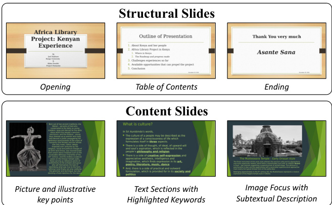Algorithm 1 Slides Clustering Algorithm
Algorithm 1は、スライドのクラスタリング処理を記述したものです。以下に各ステップを詳しく解説します。
- 1Input: スライドの類似度行列 \( S \in \mathbb{R}^{N \times N} \) および類似度閾値 \( \theta \)
- 2Initialize: クラスタ集合 \( C \gets \emptyset \) (空集合で初期化)
- 3while \( \operatorname*{max}(S) \geq \theta \) do: 類似度行列 S の最大値が閾値 \( \theta \) 以上である限り、以下のステップを繰り返します。
- 4\( (i, j) \gets \arg\operatorname*{max}(S) \): 類似度行列 S で最も類似しているスライドペア (i, j) を見つけます。
- 5if \( \exists c_{k} \in C \) such that \( (i \in \boldsymbol{c}_{k} \lor j \in \boldsymbol{c}_{k}) \) then: 既存のクラスタ \( c_{k} \) にスライド i または j のいずれかが含まれている場合、
- 6\( c_{k} \gets c_{k} \cup \{i, j\} \): スライド i と j を既存のクラスタ \( c_{k} \) にマージします。
- 7else: 既存のクラスタにスライド i と j のどちらも含まれていない場合、
- 8\( c_{\text{new}} \gets \{i, j\} \): 新しいクラスタ \( c_{\text{new}} \) を作成し、スライド i と j を追加します。
- 9\( C \gets C \cup \{c_{\text{new}}\} \): 新しいクラスタ \( c_{\text{new}} \) をクラスタ集合 C に追加します。
- 10end if
- 11Update \( S \): 類似度行列 S を更新します (具体的な更新方法は論文には記載されていません)
- 14end while
- 15Return: クラスタ集合 C
このアルゴリズムは、類似度行列に基づいてスライドを繰り返しクラスタリングし、類似度が高いスライドペアをまとめていくことで、最終的なクラスタ集合を得るものです。
- ステップ11の「Update S」の部分は、論文中には具体的な更新方法が記載されていません。通常、クラスタリングアルゴリズムでは、クラスタにまとめられたスライド間の類似度を更新し、次のイテレーションでの選択に影響を与えるようにします。
- このアルゴリズムは階層的クラスタリングの一種であり、事前にクラスタ数を指定する必要はありません。
E Code Interaction
このセクションE Code Interactionでは、PPTAGENTがスライドを生成する際に、スライドをHTML形式でレンダリングし、その背後にあるXML表現をどのように利用しているかについて解説します。 スライドの編集を容易にするために、複雑なXML形式を直接扱うのではなく、より直感的で扱いやすいHTML形式に変換することが重要なポイントです。

Figure 10は、スライドがHTML形式でどのように表示されるかを視覚的に示しています。 このHTML形式は、LLM（Large Language Model）がスライドの内容を理解し、編集するためのインターフェースとして機能します。
一方、Figure 11は、そのスライドのXML表現の一部を示しています。 PPTAGENTでは、PowerPointのネイティブなファイル形式であるXMLを直接編集するのではなく、HTMLを介して間接的に操作します。 XMLは非常に冗長で複雑なため、直接編集は困難ですが、HTMLはよりシンプルで構造化されているため、LLMによる操作が容易になります。
XML表現（Figure 11参照）は、PPTAGENTにおいて、スライドの構造やコンテンツを定義するために使用されます。しかし、XMLは非常に冗長で複雑であるため、LLMが直接編集するには適していません。
そこでPPTAGENTでは、XMLをHTMLに変換することで、LLMがより簡単にスライドを操作できるようにします。
HTML形式（Figure 10参照）は、LLMがスライドのコンテンツを理解し、編集するためのインターフェースとして機能します。 HTMLは、XMLよりもシンプルで構造化されており、LLMによる操作が容易になります。 例えば、スライド内のテキスト要素を特定し、その内容を修正したり、新しい要素を追加したりすることが容易になります。
このセクションの重要なポイントは、PPTAGENTがスライドを生成する際に、XMLの複雑さをHTMLによって抽象化し、LLMがより効率的にスライドを編集できるようにしている点です。
これにより、PPTAGENTは、高品質で視覚的に魅力的なプレゼンテーションを自動的に生成することが可能になります。
F Prompts
このセクション'F Prompts'では、PPTAGENTがプレゼンテーションを生成・評価する際に使用するプロンプト（指示文）について詳しく解説します。これらのプロンプトは、LLM（大規模言語モデル）やMLLM（マルチモーダル大規模言語モデル）が、プレゼンテーションの分析、生成、評価を適切に行うための具体的な指示を提供します。このセクションでは、これらのプロンプトがどのように構成され、どのような目的で使用されるのかを詳細に説明します。
F.1 Prompts for Presentation Analysis
このサブセクションでは、プレゼンテーション分析に使用されるプロンプトについて解説します。これらのプロンプトは、PPTAGENTが参照プレゼンテーションを分析し、スライドの機能的な種類やコンテンツのスキーマを抽出するために使用されます。具体的には、スライドがオープニング、コンテンツ、エンディングなどのどの役割を果たすかを識別したり、スライド内の要素（タイトル、本文、画像など）がどのように構成されているかを理解するために使用されます。
F.2 Prompts for Presentation Generation
このサブセクションでは、プレゼンテーション生成に使用されるプロンプトについて解説します。これらのプロンプトは、PPTAGENTが新しいプレゼンテーションを生成する際に、LLMやMLLMに対して具体的な指示を与えるために使用されます。例えば、スライドのアウトラインの生成、スライドコンテンツの生成、編集アクションの生成など、各ステップに必要なプロンプトが示されます。
論文中では、プレゼンテーション分析に使用されるプロンプトの例として、Figure 12, 13, 14が挙げられています。これらの図には、具体的なプロンプトの例が示されており、PPTAGENTがどのようにスライドの構造やレイアウトを分析するかがわかります。
同様に、プレゼンテーション生成に使用されるプロンプトの例として、Figure 15, 16, 17が挙げられています。これらの図には、スライドのアウトライン生成、スライドコンテンツ生成、編集アクション生成のための具体的なプロンプトの例が示されています。
F.3 Prompts for PPTEVAL
このサブセクションでは、プレゼンテーションの評価を行うためのフレームワークであるPPTEVALで使用されるプロンプトについて解説します。PPTEVALは、Content（内容）, Design（デザイン）, Coherence（一貫性）の3つの側面からプレゼンテーションを評価します。
PPTEVALで使用されるプロンプトの例として、Figure 18, 19, 20, 21, 22, 23が挙げられています。これらの図には、各評価側面における具体的なプロンプトの例が示されており、LLMやMLLMがどのようにプレゼンテーションを評価するかがわかります。
Figure 8: PPTEVALのスコアリング例を示しています。これは、PPTEVALがどのようにプレゼンテーションの質を評価するかの具体的な例を示しています。
Figure 9: スライドクラスタの例を示しています。これは、PPTAGENTがスライドをどのようにグループ化し、類似したレイアウトやコンテンツを持つスライドをまとめるかを示しています。
Figure 10: スライドをHTML形式でレンダリングした例を示しています。これは、PPTAGENTがスライドを編集するために、XML形式ではなく、より扱いやすいHTML形式を使用する方法を示しています。
Figure 11: プレゼンテーションスライドのXML表現の最初の60行（全1,006行）を示しています。この図は、PowerPointのXML形式が非常に複雑で冗長であることを示しており、LLMが直接編集するには難しいことを示唆しています。
Table 6: プレゼンテーション生成手法（DocPres, KCTV, PPTAGENT）の重み付けされたパフォーマンス比較を示しています。評価指標には、成功率 (SR)、Perplexity (PPL)、Rouge-L、Fréchet Inception Distance (FID)、SRで重み付けされたPPTEvalが含まれています。
System Message:
あなたはPowerPointスライドの分類を専門とするプレゼンテーション分析のエキスパートです。特に、プレゼンテーションの流れを導く構造的なスライド（オープニング、トランジション、エンディングのスライドなど）の識別スキルに長けています。スライドを分類する際は、指定された出力形式を厳守してください。
System Messageは、LLM（大規模言語モデル）に対して、役割や専門知識を与えるための指示です。この場合、LLMは「プレゼンテーション分析のエキスパート」として振る舞うように指示されています。
Prompt:
目的：プレーンテキスト形式で提供された一連のスライドを分析します。あなたのタスクは、コンテンツに基づいて構造的なスライド（オープニングやエンディングなど）を識別し、他のすべてのスライドを「コンテンツ」として分類することです。
- プレゼンテーション内の構造的なスライド（オープニング、エンディングなど）を分類します。他のすべてのスライドを「コンテンツ」に割り当てます。
- 構造的なスライドのカテゴリ名は、シンプルで、その機能のみを反映し、特定のエンティティ名を含まないようにします。
- オープニングとエンディングのスライドは、通常、プレゼンテーションの最初または最後に配置され、1つのスライドのみで構成される場合があります。
- その他のトランジションカテゴリには、部分的に同一のテキストを含む複数のスライドが含まれている必要があります。
出力形式の要件：
すべての分類された構造的なスライドを、スライドの機能のみを反映するカテゴリ名（例：「オープニング」、「エンディング」）を使用し、具体的なコンテンツを説明しない「Functional」キーでグループ化します。「Content」キーを使用して、構造的なカテゴリに分類されないすべてのスライドをリストします。
Promptは、LLMに対して具体的なタスクを与えるための指示です。この場合、LLMは、与えられたスライドを「構造的なスライド」と「コンテンツスライド」に分類するように指示されています。また、出力形式の要件も指定されており、LLMは指定された形式で結果を出力する必要があります。
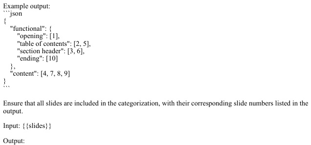Figure 12: 構造的なスライドをクラスタリングするために使用されるプロンプトの例を示しています。これは、PPTAGENTがどのようにスライドを機能的な役割に基づいてグループ化するかを示しています。
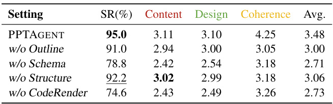System Message:
あなたは有能なアシスタントです。
Prompt:

Figure 13: レイアウトパターンを推測するために使用されるプロンプトの例を示しています。これは、PPTAGENTがスライドのレイアウトをどのように分析し、パターンを識別するかを示しています。
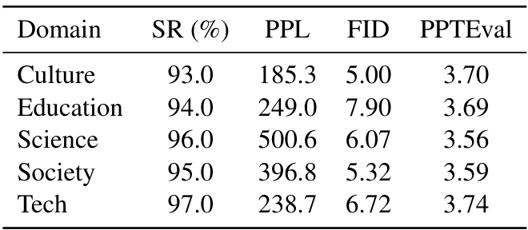System Message:
あなたは有能なアシスタントです。
Prompt:
スライドの要素を分析し、JSON形式で構造化されたテンプレートスキーマを作成してください。スキーマは以下を満たす必要があります。

Figure 14: スライドスキーマを抽出するために使用されるプロンプトの例を示しています。これは、PPTAGENTがスライドの要素をどのように分析し、構造化されたスキーマを作成するかを示しています。
System Message:
あなたはプレゼンテーションコンテンツのエディターエージェントです。参照テキストと利用可能な画像をスキーマに従って構造化されたスライドコンテンツに変換します。あなたはコンテンツの長さのようなスキーマルールに従うことに優れており、すべてのコンテンツが提供された参照資料から厳密に派生していることを保証します。あなたは新しいコンテンツを生成したり、明示的に提供されていない画像を使用したりしません。
System Message:
あなたは構造化されたPowerPointアウトラインを作成する任務を負ったプロのプレゼンテーションデザイナーです。各スライドのアウトラインには、スライドのタイトル、提供されたオプションから適切なレイアウト、簡潔な説明文が含まれている必要があります。あなたの目的は、アウトラインが指定されたスライド数に準拠し、提供されたレイアウトのみを使用するようにすることです。最終的な成果物はJSONオブジェクトとしてフォーマットされる必要があります。提供されたもの以外のレイアウトがアウトラインで使用されていないことを確認してください。
Prompt:
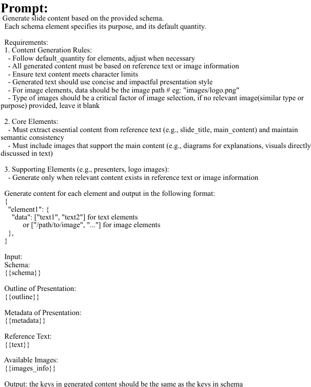Figure 16: スライドコンテンツを生成するために使用されるプロンプトの例を示しています。
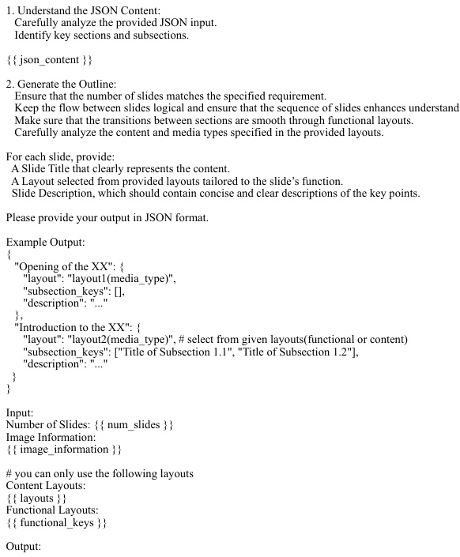Figure 15: アウトラインを生成するために使用されるプロンプトの例を示しています。
System Message:
あなたはスライドコンテンツ操作を専門とするコードジェネレーターエージェントです。あなたはコンテンツ編集コマンドをHTML構造に従って正確にAPI呼び出しに変換し、タグを区別し、正確な要素ターゲティングを保証するために適切な親子関係を維持します。
Prompt:
提供されたコマンドに基づいてAPI呼び出しのシーケンスを生成し、指定されたルールと正確な実行に準拠していることを確認します。インデントに基づいて要素の親子関係を判断し、すべての<span>および<img>要素が処理され、未処理のコンテンツが残らないようにする必要があります。
各コマンドは次の形式に従います：(element_class, type, quantity_change: int, old_data, new_data)。
Steps
-
数量調整：
- quantity_changeのルール：
- quantity_change = 0の場合、clone_paragraphまたはdel_span操作を実行しないでください。コンテンツのみを置き換えます。
- quantity_change > 0の場合、clone_paragraphを使用して対応する数の段落を追加します。
- クローンを作成するときは、特別なスタイル（太字、色など）が既に設定されている同じelement_classの段落を優先します。
- 新しくクローンされた段落のparagraph_idは、クローンされた段落内のspan_idを変更せずに保持しながら、親要素の現在の最大paragraph_idに1を加えたものにする必要があります。
- quantity_change < 0の場合、del_spanまたはdel_imageを使用して対応する要素の数を減らします。常に段落の最後からspan要素を削除してください。
- 各コマンドのAPI呼び出しは、\`quantity_change\`に応じてclone_paragraphまたはdel_span/del_imageのいずれかのみを使用でき、両方を使用することはできません。
-
コンテンツの置換：
- テキストコンテンツ：replace_spanを使用して、段落内の1つ以上の<span>要素に新しいコンテンツを順番に配布します。強調されたコンテンツには適切なタグ（太字、特殊な色、大きなフォントなど）を選択します。
- イメージコンテンツ：replace_imageを使用してイメージリソースを置き換えます。
-
出力形式：
- 各API呼び出しグループにコメントを追加して、元のコマンドの意図と関連するelement_classを説明します。
- クローン操作の場合は、新しく作成された段落のparagraph_idを注釈します。
利用可能なAPI {{api_docs}} 例の入力：
\`\`\`pythonおよび\`\`\`でラップされた、対応するコマンドのコメントとともに、API呼び出しシーケンスのみを出力してください。
Figure 17: 編集アクションを生成するために使用されるプロンプトの例を示しています。
System Message: You are a help assistant
あなたは有能なアシスタントです。
Prompt:
次の3つの側面に基づいて入力スライドを説明してください。
- 伝達される情報の量：スライドが長すぎるか、情報が少なすぎるために、色や画像のない大きな空白が生じているかどうか。
- コンテンツの明瞭さと言語の質：テキストコンテンツに文法的な誤りや不明確な表現がないかどうかを確認します。
- 画像と関連性：画像やアイコンなどの視覚補助の使用、その存在、およびそれらがスライドのテーマとコンテンツにどの程度関連しているかを評価します。
上記の概要に従い、コメントなしで客観的かつ簡潔な説明を提供してください。
Figure 18: PPTEvalでコンテンツを記述するために使用されるプロンプトの例を示しています。
System Message:
あなたは有能なアシスタントです。
Prompt:
次の3つの側面に基づいて入力スライドを説明してください。
- 視覚的な一貫性：境界線のオーバーフローやぼやけ、コントラストの低下、視覚的なノイズなど、スタイルが読みやすさを損なっていないかどうかを説明します。
- 配色：スライドで使用されている色を分析し、使用されている色を特定し、デザインがモノクロ（白黒）かカラフル（グレーはカウントされます）かを判断します。
- 視覚要素の使用：スライドにアイコン、背景、画像、または幾何学的な形状（長方形、円など）などのサポートする視覚要素が含まれているかどうかを説明します。
上記の概要に従い、コメントなしで客観的かつ簡潔な説明を提供してください。
Figure 19: Illustration of the prompt used to describe style in PPTEval.
Figure 19: PPTEvalでスタイルを記述するために使用されるプロンプトの例を示しています。
System Message:
あなたはプレゼンテーションの主要な要素とメタデータを分析および要約する責任を負う専門のプレゼンテーションコンテンツ抽出者です。あなたのタスクは、次の情報を抽出して提供することです。
Prompt:
採点基準（5点満点）：
- スライドの説明：各スライドでカバーされているコンテンツとキーポイントの簡潔な要約を提供します。
- プレゼンテーションのメタデータ：オープニングスライドとクロージングスライドから、著者、講演者、日付、およびその他の直接的に述べられた詳細など、明示的な背景情報（つまり、他の段落に含まれるのではなく、単一の段落である必要がある）を識別します。
出力例： "slide_1": "このスライドはxx、xxを紹介します。", "slide_2": "...", "background": { "speaker": "speaker x", "date": "date x" } 入力： {{presentation}} 出力：
Figure 20: PPTEvalでコンテンツを抽出するために使用されるプロンプトの例を示しています。
System Message:
あなたはスライドコンテンツの品質を評価する責任を負う公平なプレゼンテーション分析審査員です。提供されたスライド画像を注意深く確認し、そのコンテンツを評価し、理由とスコアを含むJSONオブジェクトであなたの判断を提供してください。各スコアレベルでは、すべての評価基準がそのレベルの基準を満たしている必要があります。
Prompt:
採点基準（5点満点）：
1ポイント（不良）：
スライド上のテキストには重大な文法的な誤りがあるか、構造が不十分であるため、理解することが困難です。
2ポイント（平均以下）：
スライドには明確な焦点がなく、テキストはぎこちなく言い回しされており、全体的な構成が弱いため、聴衆を引き込むことが困難です。
3 Points (Average):
スライドのコンテンツは明確で完全ですが、視覚補助が不足しているため、全体的な魅力が不十分です。
4 Points (Good):
スライドのコンテンツは明確で十分に開発されていますが、画像はテーマとの関連性が弱く、プレゼンテーションの効果を制限しています。
5 Points (Excellent):
スライドは明確な焦点を持って十分に開発されており、画像とテキストが互いに効果的に補完し合い、情報を首尾よく伝達します。
出力例： { "reason": "xx", "score": int 入力： {{descr}} 一歩ずつ考えて、あなたの判断を提供しましょう。
Figure 21: PPTEvalでコンテンツを評価するために使用されるプロンプトの例を示しています。
System Message:
あなたはスライドの視覚的な魅力を評価する責任を負う公平なプレゼンテーション分析審査員です。提供されたスライドの説明を注意深く確認し、その美学のみを評価し、理由とスコアを含むJSONオブジェクトであなたの判断を提供してください。各スコアレベルでは、すべての評価基準がそのレベルの基準を満たしている必要があります。
Prompt:
採点基準（5点満点）：
スライドは単調な色（白黒）を使用しており、読みやすさを確保しながら視覚的な魅力が欠けています。
3 Points (Average):
スライドは基本的な配色を採用していますが、アイコン、背景、画像、または幾何学的な形状（長方形など）などの補足的な視覚要素が不足しているため、見た目が単調です。
4 Points (Good):
スライドは調和のとれた配色を使用しており、いくつかの視覚要素（アイコン、背景、画像、または幾何学的な形状など）が含まれています。ただし、全体的なデザインには小さな欠陥が存在する可能性があります。
1 Point (Poor):
スライドスタイル間に矛盾があり、コンテンツが読みにくくなっています。
5 Points (Excellent):
スライドのスタイルは調和がとれており魅力的で、画像や幾何学的な形状などの補足的な視覚要素の使用は、スライドの全体的な視覚的魅力を高めます。
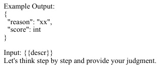Figure 22: PPTEvalでスタイルを評価するために使用されるプロンプトの例を示しています。
System Message:
あなたはプレゼンテーションの一貫性を評価する責任を負う公平なプレゼンテーション分析審査員です。提供されたプレゼンテーションの要約を注意深く確認し、その論理的な流れとコンテキスト情報を評価してください。各スコアレベルでは、すべての評価基準がそのレベルの基準を満たしている必要があります。
Prompt:
採点基準（5点満点）
1ポイント（不良）：
用語が一貫していないか、論理構造が不明確であるため、聴衆が理解することが困難です。
2ポイント（普通）：
用語は一貫しており、論理構造は概して合理的であり、移行にマイナーな問題があります。
3 Points (Average):
論理構造は健全で、移行は流暢です。ただし、基本的な背景情報がありません。
Prompt:
論理的な流れは合理的であり、（講演者や謝辞/結論などの）基本的な背景情報が含まれています。
5 Points (Excellent):
ナラティブ構造は魅力的で、細心の注意を払って整理されており、詳細で包括的な背景情報が含まれています。
出力例： { "reason": "xx", "score": int } 入力： {{presentation}} 一歩ずつ考えて、上記の概要に従ってあなたの判断を提供し、基準を厳守してください。
Figure 23: PPTEvalで一貫性を評価するために使用されるプロンプトの例を示しています。